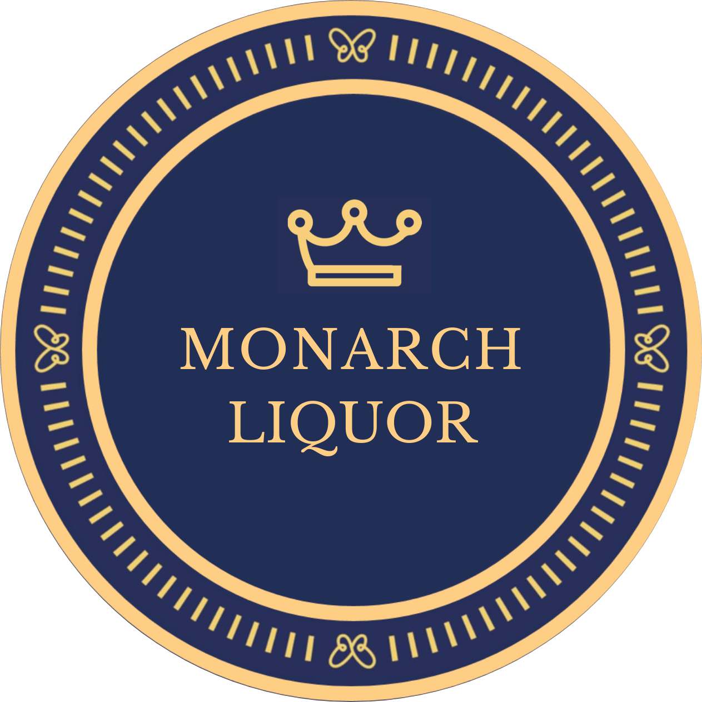

There's Local. Then There is TEXAS Local.
Monarch Liquor is community-oriented and family-owned. Founded by father and son, the first Monarch is a continuation of our family's investments in the East Austin community. Although Monarch was founded only in 2020, we've owned businesses on this corner for over 25 years!
Over those years we have been privileged to watch the community evolve. Monarch was created to emulate the eclecticism and the local pride that has become characteristic of East Austin. Our associates, our products, and our events reflect the dynamic culture and attitudes of a burgeoning food, drink, and arts scene.
Monarch Liquor II, located near Lakeway, opened later the same year. It's not the norm for a liquor store to adapt to its community, but that's what all Monarch locations try to do. We opened in Lakeway to bring our successful retail delivery model to a new market and to 'stretch our legs' in a bigger store.
The art nouveau inspired posters of three women enjoying the three cardinal drinks of a good time are characteristic of any Monarch Location. After all, every good liquor store is all about their Spirits, Wine, and Beer.
